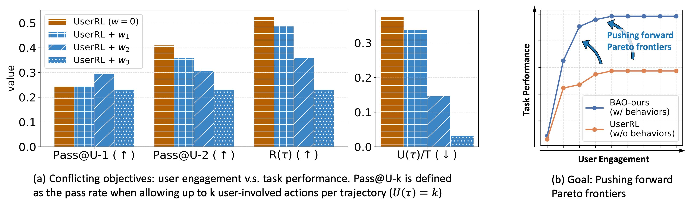
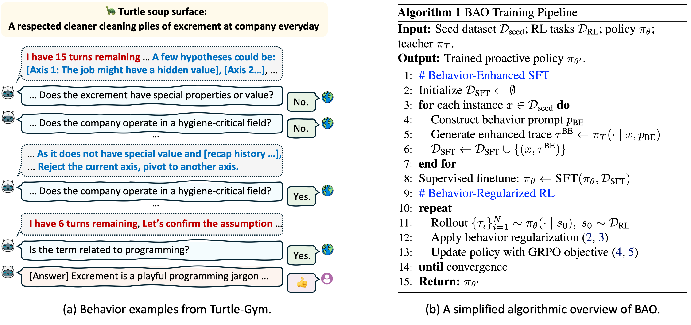
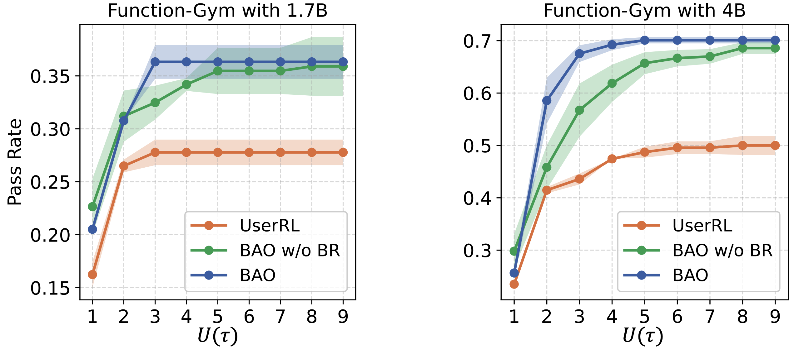
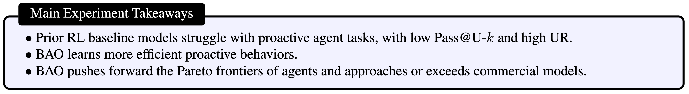
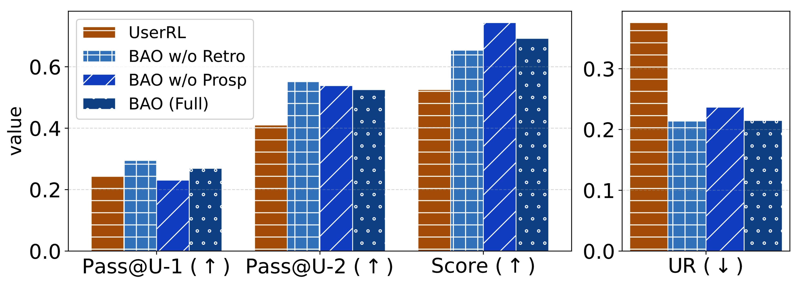
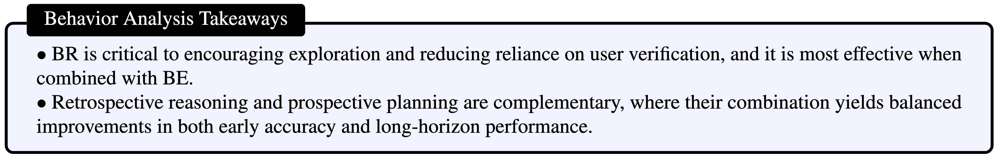
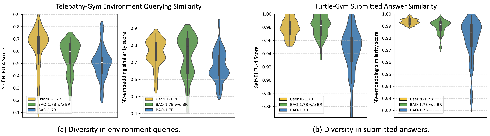
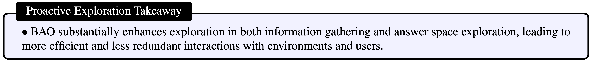
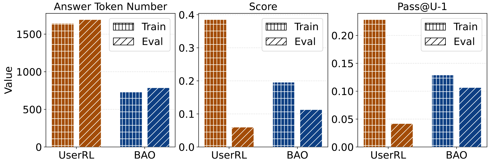
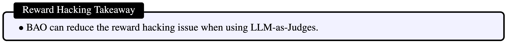

Proactive large language model (LLM) agents aim to actively plan, query, and interact over multiple turns, enabling efficient task completion beyond passive instruction following and making them essential for real-world, user-centric applications. Agentic reinforcement learning (RL) has recently emerged as a promising solution for training such agents in multi-turn settings, allowing interaction strategies to be learned from feedback. However, existing pipelines face a critical challenge in balancing task performance with user engagement, as passive agents can not efficiently adapt to users' intentions while overuse of human feedback reduces their satisfaction. To address this trade-off, we propose BAO, an agentic RL framework that combines behavior enhancement to enrich proactive reasoning and information-gathering capabilities with behavior regularization to suppress inefficient or redundant interactions and align agent behavior with user expectations. We evaluate BAO on multiple tasks from the UserRL benchmark suite, and demonstrate that it substantially outperforms RL baselines under controlled comparisons while achieving comparable or even superior performance to frontier LLM agents, highlighting its effectiveness for training proactive, user-aligned LLM agents in complex multi-turn scenarios.
Proactive Agents. Unlike passive LLMs that only respond to given prompts, proactive agents operate over multiple turns and can actively decide when and how to interact with environments and users. They strategically gather information, reason over the history, and determine the right moment to provide an answer, rather than treating each query as an isolated task.
Multi-Objective Optimization. Training a proactive agent involves balancing two competing objectives: maximizing task performance while minimizing unnecessary user engagement. We formalize this as a weighted learning objective:
Here, R(τ) measures task performance accumulated over the trajectory, U(τ) counts the number of user-involved interactions, and the weight w controls the trade-off between task accuracy and user effort.
Pareto Frontiers. These two objectives are often in conflict: more user interaction can improve task performance, but at the cost of higher user burden. Simply tuning the weight w is insufficient to resolve this tension as shown in the figure below. Instead, the goal of this work is to learn Pareto-optimal policies that achieve the best possible trade-offs: improving task performance without extensively requesting unnecessary user efforts.

Figure 2.
Multi-Turn Behaviors. We introduce two classes of multi-turn behaviors: (1) Retrospective Reasoning, which integrates and revises information from history, and (2) Prospective Planning, which bridges current reasoning to future actions. With Examples in the following figure.
BAO. Our method has two key components: (i) behavior enhancement, which enforces inter-turn proactive behaviors; and (ii) behavior-regularized RL, which shapes behaviors during policy update. A simplified algorithmic overview is also presented in the following figure.

Figure 3.
We conduct experiments on three tasks: Function-Gym, Telepathy-Gym, and Turtle-Gym from the user-centric benchmark UserRL. These tasks require the agent to discover hidden contextual information through interaction and to submit answers that are aligned with the underlying context. The finetuning baseline contains the proactive RL algorithm UserRL introduced in the same paper. The main evaluation metrics include Pass@U-k, which measures the pass rate when allowing up to k user-involved actions per trajectory (i.e., \( U(\tau) = k \)), Score, which denotes the task reward, and the User-Involvement Rate (UR), defined as \( \mathbb{E}[\,U(\tau) / |\tau|\,] \). We aim to train proactive agents with high Pass@U-k and low UR.
Baseline Comparison. The Pareto Frontier of RL-trained proactive agents are visualized in Figure 4. We can clearly see that BAO learns more efficient proactive behaviors, and pushes forward the Pareto frontiers of agents with a significantly high performance increase rate when receiving more feedback information from users and a higher upper bound of performance when working with users.

Figure 4.

Behavior Analysis. How does Retrospective Reasoning and Prospective Planning behaviors contribute to the overall performance? We conduct an ablation study by controlling the enhanced behavior types included in the SFT dataset. The results are visualized in Figure 5.
We observe that Retrospective Reasoning increases the upper bound of the pass rate, as reflected by the highest Score value, which corresponds to the pass rate achievable when the agent is allowed to submit answers until the interaction budget is exhausted. However, retrospective reasoning alone does not necessarily improve Pass@U-1. One straightforward explanation is that only when the number increases does the incorporation of history start to show its capability. In contrast, Prospective Planning improves Pass@U-1 due to its planning-ahead capability. Nevertheless, prospective planning does not achieve the highest Score, indicating that under longer interaction horizons, retrospective reasoning is still required to effectively summarize past information and connect it to future actions. By combining these two behaviors, we achieve balanced performance in both metrics, as demonstrated by the full BAO implementation.

Figure 5.

Proactive Exploration. How does BAO improve information collection strategies and hidden context exploration? We analyze exploration capability through two forms of diversity: diversity in environment queries, which reflects how effectively the agent collects information from the environment, and diversity in answer submissions, which captures the agent's ability to explore alternative reasoning paths after receiving negative user feedback. We utilize self-BLEU score and embedding similarity of the NV-Embed-v2 model to analyze the diversity. The results are presented in Figure 6.
The results of diversity in environment queries comfirm that our BAO significantly increases diversity during the information-gathering stage, as reflected by lower lexical and semantic similarity scores. Results from answer submissions diversity further indicate that after information gathering, BAO explores the answer space more efficiently by reducing answer redundancy when submitting answers following failures. Another finding is that relying solely on multi-turn behavior enhancement during SFT is insufficient to preserve these desirable exploration behaviors; combining it with regularization during RL yields the strongest capabilities.

Figure 6. Environment queries and submitted answers diversity evaluation. BAO queries more diverse information during interactions and explores answer space better by generating more diverse answers.

Reward Hacking Discussion. How does the notorious reward hacking issue in LLM-as-Judges affect proactive agent training? A common form of reward hacking involves repeatedly generating long answers to confuse the judge model, inducing it to leak hidden knowledge or assign positive rewards even when the response does not explicitly satisfy the target rubrics.
To quantitatively characterize this issue, we visualize the average number of answer tokens per trajectory, the reward score, and pass@U-1 in training and testing in Figure 7. We observe that UserRL produces significantly longer answers and achieves higher training scores and pass@U-1. However, during evaluation, both the score and pass@U-1 drop sharply, despite a high reward translation rate (RTR=0.166), defined as the ratio between evaluation and training rewards. In contrast, although our BAO attains relatively lower scores and pass@U-1 during training, it consistently outperforms UserRL at evaluation time while maintaining a comparably high RTR =0.545. This indicates that BAO effectively mitigates reward hacking by encouraging desirable interaction behaviors and applying behavior regularization during RL training.

Figure 7.

Traces Visualization. In this work, we highlight the trade-off between task performance and user engagement efforts.
There's a lot of excellent work that was introduced around the same time as ours.
Progressive Encoding for Neural Optimization introduces an idea similar to our windowed position encoding for coarse-to-fine optimization.
D-NeRF and NR-NeRF both use deformation fields to model non-rigid scenes.
Some works model videos with a NeRF by directly modulating the density, such as Video-NeRF, NSFF, and DyNeRF
There are probably many more by the time you are reading this. Check out Frank Dellart's survey on recent NeRF papers, and Yen-Chen Lin's curated list of NeRF papers.
@article{park2021nerfies,
author = {Park, Keunhong and Sinha, Utkarsh and Barron, Jonathan T. and Bouaziz, Sofien and Goldman, Dan B and Seitz, Steven M. and Martin-Brualla, Ricardo},
title = {Nerfies: Deformable Neural Radiance Fields},
journal = {ICCV},
year = {2021},
}